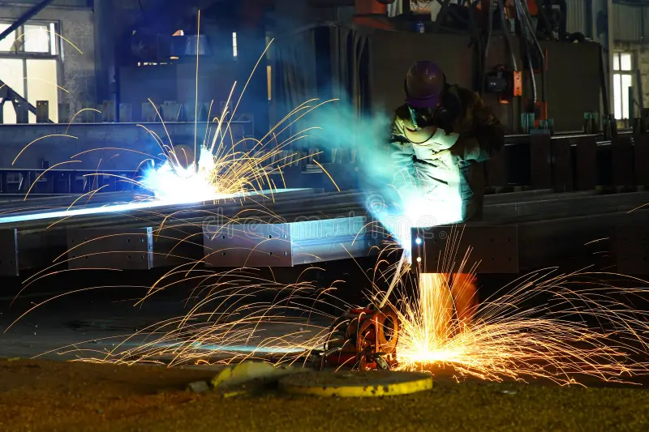
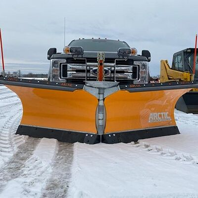

About
Who We Are
Malicious Mammoth began as a one truck shop with a simple complaint: the plows on the market were flat, boxy, and not very good at moving snow. We were a small crew of welders, retired snow removal drivers, and one person who just really liked mammoths. We named the company after the animal and built our first curved blade the following winter.
As for the “malicious” part, that’s how a snowbank feels about us.

Why Plows
Mammoths lived through the Ice Age, so we figure we inherited some experience with winter. We build plows and nothing else, which means every hour in the shop goes to getting one thing right. No loaders, no cranes, and no excavators. Just the tool that stands between you and a blocked driveway.
How We Build Them
Every plow starts as a sheet of thick steel. We roll it into a curve, weld it together, and paint it safety orange so that the other drivers can see you coming. Then each plow gets tested the hard way, by driving it into the biggest snowbank we can find. If the snow rolls up and away, it ships. If it doesn’t, it goes back to the welders.
Ordering is just as simple. Pick the plow that fits your vehicle, find a dealer, and place your order before the season starts. Your dealer fits it to your truck, so you don’t have to.
